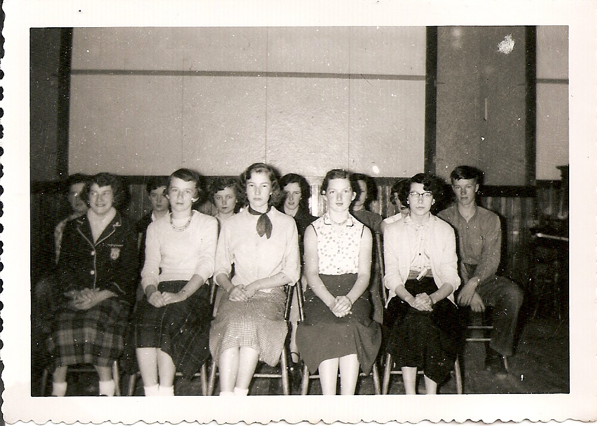
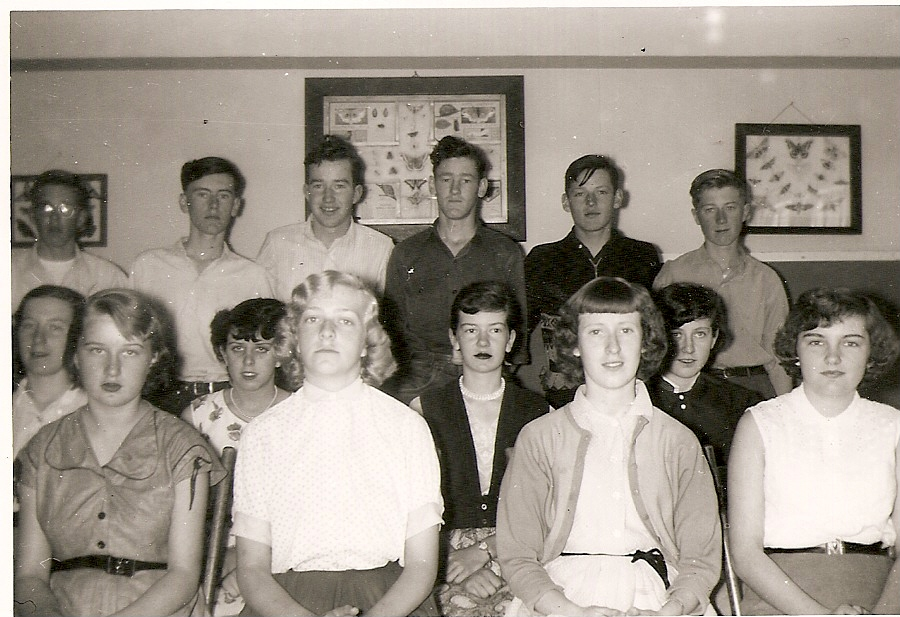

The Family Chronicle
No. 161 September 30, 2008
____________________________________________________________________
Correction
Thanks to Joan (MacDonald) Hyslop for a correction to Chronicle #149. The students for Grades 10 and 11 should read as follows:

Grade 10
Marjorie Mills
Joan MacDonald
June L MacDonald
David Williston
Eva Fraser
Wendall Gregan
Eleanor Bransfield
Maxine MacDonald
Neil Watling
Edgar MacDonald
Jimmie Godfrey
June W (MacDonald)
Cecelia McClenaghan
Peggy Gregan
Ralph MacDonald

Grade 11
Elizabeth Williston
Glenn Russell
Lola Jenkins
William Godfrey
Jean Williston
Sylvia MacLenaghan
Betty Williston
Verona Taylor
Joan Gulliver
Adelle Fowlie
Blanche MacDonald
Edna MacRae
St. Paul’s Presbyterian Church

Above photo of Summer Bible Camp, an annual event at most churches, this one at St. Paul’s Presbyterian Church in Black River (year unknown). I recognize Aunt Kate Watling and Mrs. Jim Cameron at the top left.

St. Paul’s again possibly in early 1950’s. If readers provide names, I will be glad to reprint
THINGS YOU DON'T HEAR ANYMORE.......
Fill the ice trays, we're going to have company after while
Watch for the postman, I want to get this letter to Aunt Mary in the mail today.
Quit slamming the screen door when you are on your way out!
Be sure and pull the windows down when you leave, it looks like a shower is coming up.
Don't forget to wind the clock before you go to bed.
Wash your feet before you go to bed, they are nasty from playing outside all day barefooted.
Why can't you remember to roll up your pant legs? Getting them caught in the bicycle chain so many times is tearing them up.
You have torn the knees out of that pair of pants so many times there is nothing left to put a patch on.
Don't you go outside with your good school clothes on!
Go comb your hair; it looks like the rats have nested in it all night.
Be sure and pour the cream off the top of the milk when you open the new bottle.
Take that empty bottle to the store with you so you won't have to pay a deposit on another one.
Put a dish towel over the cake so the flies won't get on it.
Quit jumping on the floor! I have a cake in the oven and you are going to make it fall if you don't quit!
Let me know when the Fuller Brush man comes by, I need to get a few things from him.
You boys stay close by, the car may not start and I will need you to help push it off.
There's a dollar in my purse, get 5 gallons of gas when you go to town.
Open the back door and see if we can get a breeze through here, it is getting hot.
You can walk to the store; it won't hurt you to get some exercise.
Don't sit too close to the TV. It is hard on your eyes.
If you pull that stunt again, I am going to wear you out!
Don't lose that button; I'll sew it back on after awhile.
Wash under your neck before you come to the table, you have beads of dirt and sweat all under there.
Get out from under the sewing machine; pumping it messes up the thread!
Quit crossing your eyes! They will get stuck that way!
Soak your foot in this pan of coal oil so that bad cut won't get infected.
When you take your driving test, don't forget to signal each turn. Left arm straight out the window for a left turn; left arm bent up at the elbow for a right turn; and straight down to the side of the door when you are going to stop.
It is: 'Yes Ma'am!' and 'No Ma'am!' to me, young man, and don’t forget it!
Note: Source unknown but sent to me by a number of readers
The Family Chronicle (Copyright) is an occasional newsletter published by Don Glendenning and posted on the family website. It is intended to share information about my family, community and the times in which I grew up. While every effort is made to be accurate, errors are likely to occur. Comments, enquiries and information may be sent to 62 Queen Elizabeth Drive, Charlottetown, PEI, C1A 3A9. Tel: 902 892 5859. Email: don@glendenning.net Web: www.glendenning.net/don